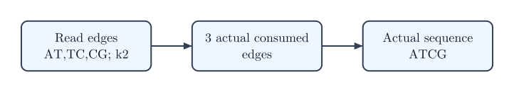
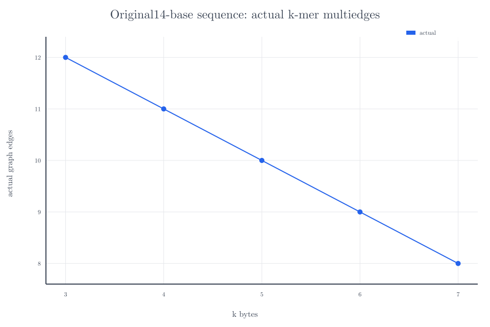
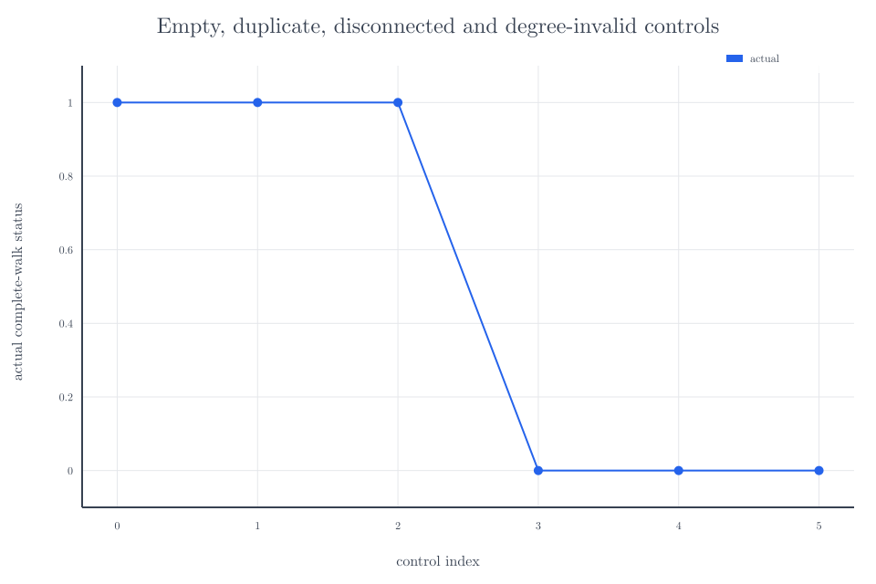
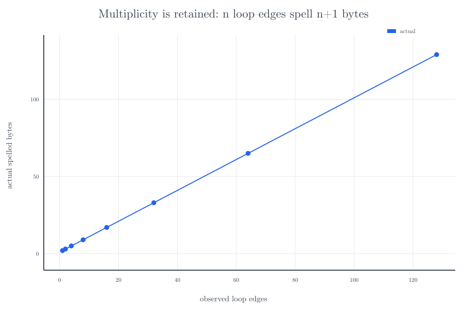

De Bruijn assembly: an exact toy Euler walk
Abstract
Overlapping reads can be represented by their k-mer transitions. An Euler walk spells a sequence using each observed k-mer occurrence once, but a single contig exists only when degree balance and connectivity permit it.
The method
Each k-mer adds a directed multiedge from its(k−1)-byte prefix to suffix. An Euler trail needs one out−in=1 start and one in−out=1 end, or every degree balanced for a circuit. Hierholzer follows unused edges, unwinds completed trails, then reverses the unwinding order. Degree tests plus consuming every edge establish one complete walk; spelling starts with the first vertex then appends one byte per edge, giving length edges+k−1. Repeated observations remain repeated edges.
Simple worked example
#include <dm/dm.hpp>
int main() {
namespace a = dm::algorithms;
namespace g = dm::graphics;
std::filesystem::create_directories("build");
auto r = a::velvet_work({"AT", "TC", "CG"}, 2);
std::print("| actual vertices | edges | actual walk | sequence | complete " "|\n|---|---:|---|---|---|\n|`{}`|{}|`{}`|{}|{}|\n",
r.vertices, r.edges.size(), r.walk, r.sequence, r.eulerian);
g::Diagram concept_diagram(48, 1100);
concept_diagram.node("n0", {0, 0}, "Read edges AT,TC,CG; k2");
concept_diagram.node("n1", {5, 0},
std::format("{} actual consumed edges", r.consumed));
concept_diagram.node("n2", {10, 0},
std::format("Actual sequence {}", r.sequence));
concept_diagram.edge("n0", "n1").edge("n1", "n2");
concept_diagram.save_svg("build/velvet_tiny.svg");
}| actual vertices | edges | actual walk | sequence | complete |
|---|---|---|---|---|
["A", "T", "C", "G"] | 3 | ["A", "T", "C", "G"] | ATCG | true |

The retained original experiment
#include <dm/dm.hpp>
int main() {
namespace a = dm::algorithms;
namespace g = dm::graphics;
std::filesystem::create_directories("build");
std::string original = "ATCAGCTGACGTAC";
std::vector<double> x, y;
std::print("| k | observed edges | actual consumed | complete | actual sequence | matches original " "|\n|---:|---:|---:|---|---|---|\n");
for (int k = 3; k <= 7; ++k) {
std::vector<std::string> reads;
for (std::size_t i = 0; i + k <= original.size(); ++i)
reads.push_back(original.substr(i, k));
auto r = a::velvet_work(reads, k);
std::print("|{}|{}|{}|{}|{}|{}|\n", k, r.edges.size(), r.consumed,
r.eulerian, r.sequence, r.sequence == original);
x.push_back(k);
y.push_back(r.edges.size());
}
auto p = g::RPlot::create();
p.line(x, y, "actual", {37, 99, 235}, 2);
p.points(x, y, "", {37, 99, 235}, 5);
p.title("Original14-base sequence: actual k-mer multiedges").x_label(
"k bytes").y_label("actual graph edges");
p.save_svg("build/velvet_original.svg");
}| k | observed edges | actual consumed | complete | actual sequence | matches original |
|---|---|---|---|---|---|
| 3 | 12 | 12 | true | ATCAGCTGACGTAC | true |
| 4 | 11 | 11 | true | ATCAGCTGACGTAC | true |
| 5 | 10 | 10 | true | ATCAGCTGACGTAC | true |
| 6 | 9 | 9 | true | ATCAGCTGACGTAC | true |
| 7 | 8 | 8 | true | ATCAGCTGACGTAC | true |

Checking the theory and controls
#include <dm/dm.hpp>
int main() {
namespace a = dm::algorithms;
namespace g = dm::graphics;
std::filesystem::create_directories("build");
std::vector<double> x, y;
std::print("| reads | complete | consumed | sequence |\n|---|---|---:|---|\n");
int i = 0;
for (auto reads : std::vector<std::vector<std::string>>{
{}, {"AT", "TC"}, {"AA", "AA"}, {"AT", "GC"}, {"AT", "AG"},
{"TTACGGCA", "GGCATTAC"}
}) {
auto r = a::velvet_work(reads, 2);
std::print("|`{}`|{}|{}|{}|\n", reads, r.eulerian, r.consumed,
r.sequence.empty() ? "(empty)" : r.sequence);
x.push_back(i++);
y.push_back(r.eulerian);
}
auto p = g::RPlot::create();
p.line(x, y, "actual", {37, 99, 235}, 2);
p.points(x, y, "", {37, 99, 235}, 5);
p.title("Empty, duplicate, disconnected and degree-invalid controls").x_label("control index").y_label("actual complete-walk status");
p.save_svg("build/velvet_controls.svg");
}| reads | complete | consumed | sequence |
|---|---|---|---|
[] | true | 0 | (empty) |
["AT", "TC"] | true | 2 | ATC |
["AA", "AA"] | true | 2 | AAA |
["AT", "GC"] | false | 0 | (empty) |
["AT", "AG"] | false | 0 | (empty) |
["TTACGGCA", "GGCATTAC"] | false | 0 | (empty) |

Sensitivity and selected work
#include <dm/dm.hpp>
int main() {
namespace a = dm::algorithms;
namespace g = dm::graphics;
std::filesystem::create_directories("build");
std::vector<double> x, y;
std::print("| identical AA observations | edges | consumed | actual sequence bytes " "|\n|---:|---:|---:|---:|\n");
for (int n : {1, 2, 4, 8, 16, 32, 64, 128}) {
auto r = a::velvet_work(std::vector<std::string>(n, "AA"), 2);
std::print("|{}|{}|{}|{}|\n", n, r.edges.size(), r.consumed,
r.sequence.size());
x.push_back(n);
y.push_back(r.sequence.size());
}
auto p = g::RPlot::create();
p.line(x, y, "actual", {37, 99, 235}, 2);
p.points(x, y, "", {37, 99, 235}, 5);
p.title("Multiplicity is retained: n loop edges spell n+1 bytes").x_label(
"observed loop edges").y_label("actual spelled bytes");
p.save_svg("build/velvet_work.svg");
}| identical AA observations | edges | consumed | actual sequence bytes |
|---|---|---|---|
| 1 | 1 | 1 | 2 |
| 2 | 2 | 2 | 3 |
| 4 | 4 | 4 | 5 |
| 8 | 8 | 8 | 9 |
| 16 | 16 | 16 | 17 |
| 32 | 32 | 32 | 33 |
| 64 | 64 | 64 | 65 |
| 128 | 128 | 128 | 129 |

Interpretation and limits
This is a deterministic exact multigraph exercise inspired by de Bruijn assembly, not the full Velvet genome assembler. It lacks coverage normalization, tip/bubble removal, sequencing-error correction and multiple-contig output. Degree/connectivity failure returns explicit eulerian=false and no sequence, rather than spelling a partial disconnected walk. k must be at least2; shorter reads contribute no edges.
The complete editable C++ programs save figures locally; results contain ordinary computed Markdown. Selected counters describe actual producer operations, excluding validation when stated.
References
Verified in the shared ten-document batch: 84 scoped native cases;20 directly
instrumented ASan/UBSan cases;45 executable public examples;127/127 definitions
across12 full scopes;10 hovers;2400 independent records/9344 checks;9 frozen
valid-input families plus the unchanged shared merge producer;11
checkout/installed standalone headers and linked ten-family consumer;40 executed
programs and40 inspected figures with both exports. Receipts:
build/mepml-conversion/batch-414-423/.